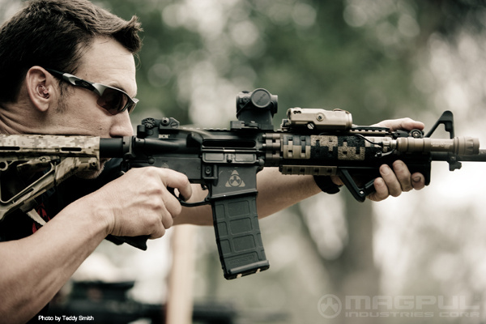

銃の部位
・拳銃(例: ベレッタ・M92FS)
・小銃(例: コルト・M4A1)
構え方
・悪い例
突っ込みどころ満載なことで有名な画像であるが、今回は銃の構え方そのものについてのみ触れる。
何故悪いかというと、肩越しに担いでいるという点が最も大きい。
仮に実銃でこんな構え方をすると、
射撃→反動発生→しっかり構えていないので反動を吸収しきれない→最悪の場合銃が顔面を直撃し、寧ろお前の顔が吹っ飛ぶ
…ということが起こりうる。もはや命中精度だのなんだのを問う以前の問題である。
基本的には反動が発生しないエアガンではさすがに構え方が悪いからケガするということはないが、命中精度などは期待できないし、何よりカッコ悪い。
基本的にやはり実銃と同じカタチをしている以上、同じ構え方をしてやるのがベストなのだ。
というわけで、基本的な構え方を簡単に記していこうと思う。
ちなみにこの漫画の作者はこれを反省(？)し、マルイのPSG-1を購入して自らこの構え方をパロディした画像や、正しく構えた画像をTwitterにアップしているとか。
・小銃(ライフル)の場合
ここでは近年の主流である突撃銃(アサルトライフル)を例にとって説明する。0.片足を一歩引き、少し前傾姿勢を取る。
1.銃把(グリップ)を利き手で握る。
2.逆の手でハンドガード、グリップなどを握る。
3.銃床(ストック)を肩に当て、同じくそこに頬を軽く乗せる。
4.サイトを見て、照準を合わせる。
5.射撃。
銃によって差異は多かれ少なかれあるのだが、おおよそはこれが基本。・拳銃(ハンドガン)の場合
0.片足を一歩引き、少し前傾姿勢を取る。
1.銃把(グリップ)を利き手で握る。
2.腕をスッと前に持ってくる。
(このとき肩も一緒に上がらないように注意したい。)
3.左手は添えるだけ。
4.サイトを見て、照準を合わせる。
5.射撃。
・その他の構え方
・伏せ撃ち英語で書くとプローン(prone)。 地面に身体を伏せ、その姿勢で銃を構えて射撃する射撃姿勢。
射撃時の安定性に優れ、また姿勢が低くなり目立たなくなるため敵から発見される確率を低くすることができる。
反面、敵の射撃を受けて咄嗟に移動したりすることができず、また横方向への反撃も難しくなる。
その特性上、遠距離で敵に発見されないように射撃を行うのに適している。
・膝撃ち
ニーリング(kneeling)とも。
片方の足を銃に対し90度ほど開いた状態で膝を地面に着き、体重をもう片方の足にかけた状態で構えて射撃する姿勢。
プローンほどではないが姿勢を低くしながら安定した射撃ができ、また比較的素早く移動に移ることができる。
主に中距離で障害物などに身を隠しながら安定した射撃を行うのに適した射撃姿勢である。
・腰だめ撃ち
ストックを腰に当てた体制で射撃し、弾をバラ撒く射撃姿勢。
全く照準器を見ないため遠距離の敵への正確な射撃には適さないが広い視野と射角を確保しやすく、近距離の正面の敵の面制圧や牽制に適している。
その特性上、主に軽機関銃や一部の短機関銃などで用いられ、精度より制圧力を重視した撃ち方である。
・モディファイド・プローン
伏せ撃ちの応用姿勢。 低い姿勢で片足を伸ばし、もう片足を曲げて体を屈めるように低くした姿勢。
姿勢の特性上、銃が非常に地面に近い位置に来るが、銃と地面の間は拳一つ分程度開けておくのが望ましいとされる。
自動車を挟んでタイヤに隠れながら後ろに隠れている敵の足首を狙う時などに有効。
・コスタ撃ち
かつては銃器メーカー「マグプル」の軍事インストラクター、現在はCosta Ludus社のクリス・コスタ氏の構え方。
アサルトライフルを利き手の逆の腕のひじを伸ばした状態でハンドガードを横から握る独特の構え。

・インスティンクト
instinct。英語で直感、勘を意味する語で、この場合「サイトを見ずに素早く構え、直感で撃つ」こと。
銃を構えていない状態からそのまま腕を持ってきてサイトを見る過程は省略し、銃を内向きに構えて素早く撃つ。
横向きにすることで精度は下がり、ややジャムのリスクが伴うが、反動を抑えられるというメリットがある。
おおよそ近距離で会敵した際に用いる撃ち方で、精度はあまり重視せず、いかに早く撃つかに重きを置いている。
ただし、無論基本的な構え方や照準感覚の正確さは求められる構え方で、やってみると意外と難しい。
元々遠距離向きの構え方ではないし、内向きで構える都合上ホップアップ付きのエアガンでやると弾道が曲がることが多いので明らかに近距離向き。
ちなみに、日本人SUREFIREインストラクターであるイチロー・ナガタ氏によると、「0.4秒切りたいところだわな」とのこと。…マジで？(汗
http://www.youtube.com/watch?v=e9Zaz28WE9M
メンテナンス・全般
・レバー等が飛び出ている面を上にして置く。
コッキングレバーなどが銃の側面に飛び出している際は、その面を上にして銃を寝かせること。下にして置くと銃自体が安定しないだけでなく、レバーなどに無用な負荷がかかったり傷付く原因となる。
・拾ったBB弾は使わない。
基本中の基本。地面に落ちた弾はその際に土などのゴミが付着しており、これをそのまま使うと弾詰まりやそれに起因する諸トラブルに発展する。
インナーバレルに詰まったり、メカボックス破損なんてことになったら目も当てられない。
同様に一度使ったBB弾も使わないこと。
・BB弾を混ぜて使わない。
肉眼ではどれもほぼ同じにしか見えないBB弾だが、実はメーカーによって出来栄えにかなりの差がある。なので、混ぜて使うと動作不良の原因になる。エンジンに混ぜ物の燃料を使うようなものなので、やめよう。
・使い終わったら弾は抜いておく。
保管する際にはマガジン内のバネやゼンマイ、エアガンのチャンバーやホップ、安全の為にエアガンとマガジンからBB弾は抜いておくこと。バネ、ゼンマイ、ホップパッキンのヘタりや、暴発などによる不慮の事故を防ぐため。
・注油するオイルやグリスにCRCは絶対に使わないこと。
CRCとは平たく言えば「KURE 5-56」。石油系溶剤を含むのでプラスチックやゴムに腐食性があり、使うとプラやゴム成分の多いエアガンを傷めてしまう。
潤滑剤は基本的にシリコンオイル、メカボックス内にはセラミックグリスやシリコングリスをオススメする。
シリコンオイルはマルイ製が、グリスはタミヤ製が入手しやすい。
・一日使い終わったら可変ホップを完全に解除すること。
詳しく話すと長くなるので割愛するが、平たく言ってしまえば「ホップアップシステムのゴムに負荷をかけない為」。かけっぱなしだとゴムが押された状態で放置されることになるので、ホップラバーに負荷がかかり、ヘタりが早くなる。
一日ゲームで使い終わったら可変ホップを解除することが望ましい。
メンテナンス・電動ガン
・使い終わったらセミオートで一発空撃ちすること。
これは重要。フルオートで発射した後トリガーを離して止めると、この際に機関部のバネに負荷が掛かっている状態で停止することがある。
この状態で長時間放置するとスプリングがヘタってしまい、エアガンのパワーが落ちてしまう。
よって、放置する際にはセレクターをセミオート(単射)に合わせ、一発しっかり撃ってあげてから安置しましょう。
・バッテリーの保管方法を心得ておく。
電動ガンのパワーソースであるバッテリー。これを長持ちさせるにおいて、しっかりとした保管方法で保管しておくことが望ましい…のだが。
実際、バッテリーによって保管方法に差があってややこしい。
ニッカド(Ni-Cd): 放電して保管。継ぎ足し充電NG。
ニッケル水素(Ni-MH): 月一で充電。継ぎ足し充電OK。放電禁止。
リポ(Li-Po): 容量5、60%程度で保管、継ぎ足し充電OK、発火の原因になるので衝撃や熱に注意。
取り敢えずこんなところだろうか。無論、エアガンに着けっぱなしにするのはご法度。メンテナンス・ガスガン
・ガスはある程度抜いて保管すること。
満充填で保管するとパッキンに負荷がかかり、この状態で気温が上がって圧力が上昇すると破損に繋がる場合がある。ので、ガスを満タンにした状態で保管するのは好ましくない。
多少抜いておいて、ほんの少しだけ残しておくのが良い。空の状態からガス缶をほんの一瞬ワンプッシュくらい。
(※ただしタナカ製や旧WA製は抜いておく方がいいらしいので、メーカーごとに取扱い説明書に準ずる方がいいかも。)
できれば保管する際に残しておくガスもパッキンに腐食性のあるHFC152aではなく、HFC134aが望ましい。
・通常分解(フィールドストリッピング)して可動部を念入りにメンテナンスすること。
特にガスブローバックにおいて重要。ガスブロは電動ガンなどと比較して可動部が多いため、結構メンテナンスで性能が左右される。
殊にサバゲーで使用したものは砂塵や埃などを噛み込んでるので結構汚い。
気密部分(パッキンやOリング)にはシリコンスプレー、作動部分にはグリスが鉄則。
ただし、シリンダー内にグリスをベタベタ塗らない事。シリコンスプレーで充分。
・ガスを抜く際はバルブを押して抜かないこと。
実は筆者もこれは最近知った。バルブを押してガスを抜くとパッキンが急速に冷え、更にガスの圧力がかかるのでパッキンが吹っ飛ぶ可能性もある。
ので一発ずつ撃って抜くか、ガスを入れる穴から抜くのが正解。